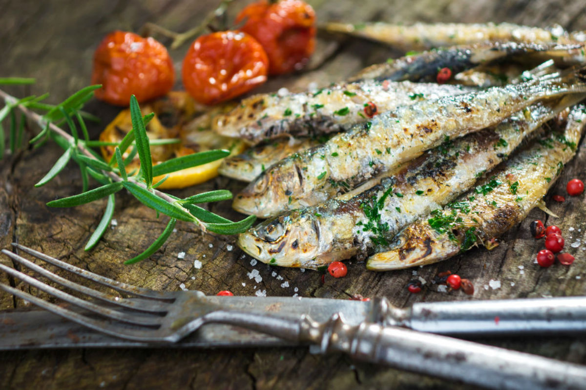
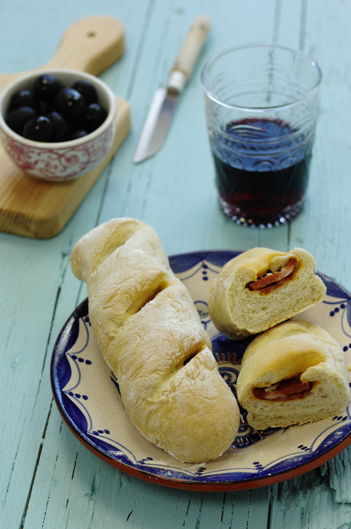
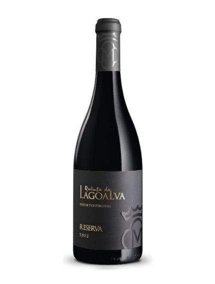

Annual party that takes place between the 12th and 13th of June in Lisbon to celebrate Santo António.
Lisbon is filled with garlands, colors, flowers, live music performances and popular marches.
When: Jun 12, 2020 - Jun 13, 2020
Location: Lisabon, Portugal
Attendance before COVID-19:
unknown

Sardinha na brasa shopping_cart
The sardine on the grill is a traditional dish of Portuguese cuisine and is one of the 7 Wonders of
Gastronomy of Portugal.
In Portugal, it is customary to make this dish during popular festivals.

Pão de chouriço shopping_cart
Steaming hot Portuguese rolls filled with chorizo sausage. Product known at parties, pilgrimages,
events, fairs.

Lagoalva Tinto 2016
Produced in the region of Vinhos do Tejo, in the Alpiarça area, it accompanies well-seasoned dishes.